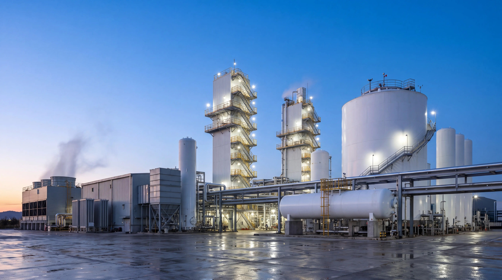
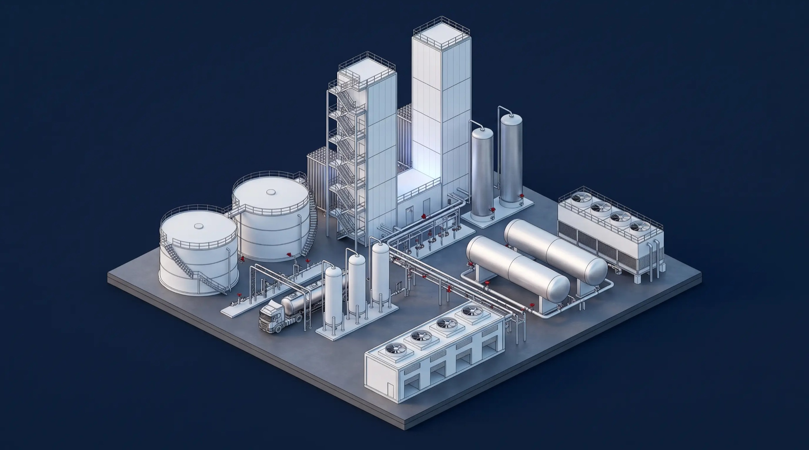
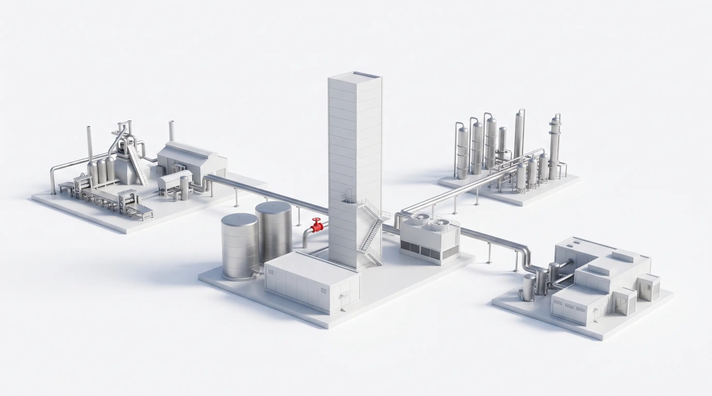
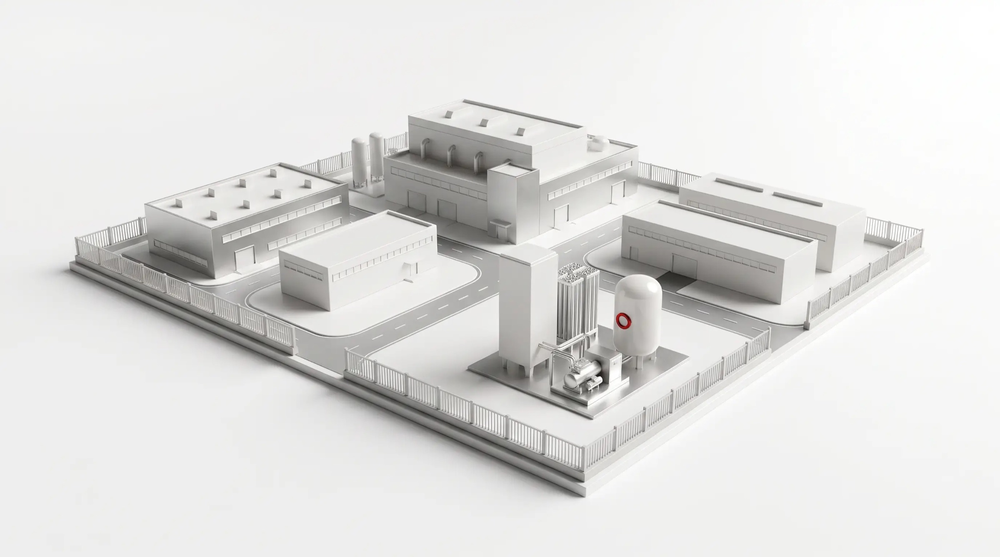
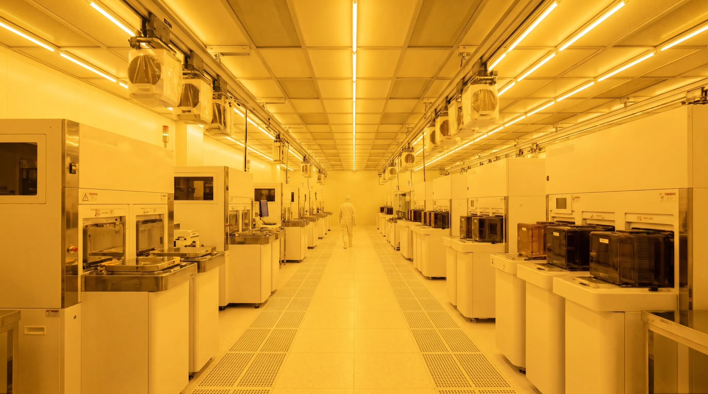
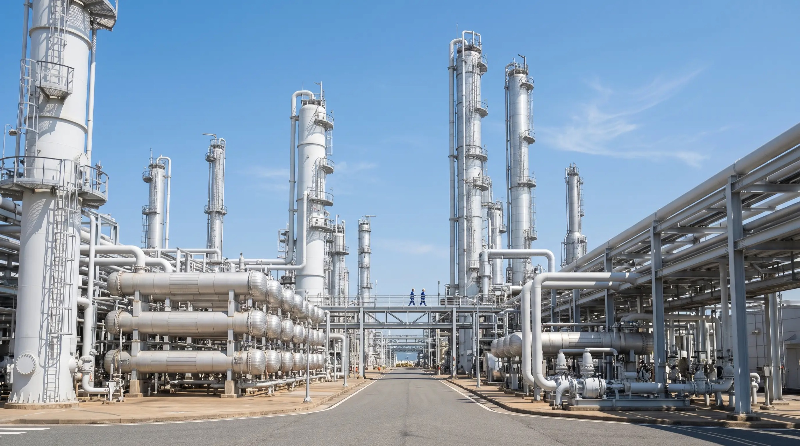
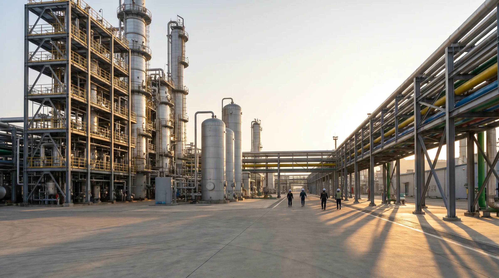
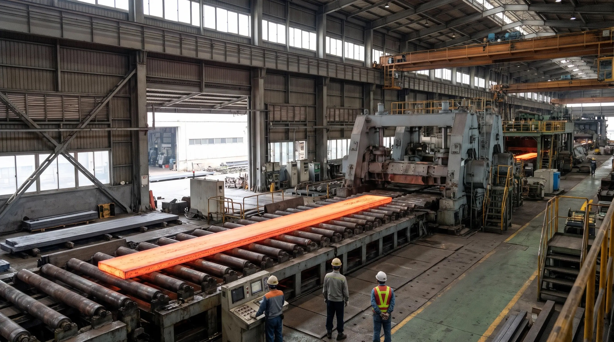
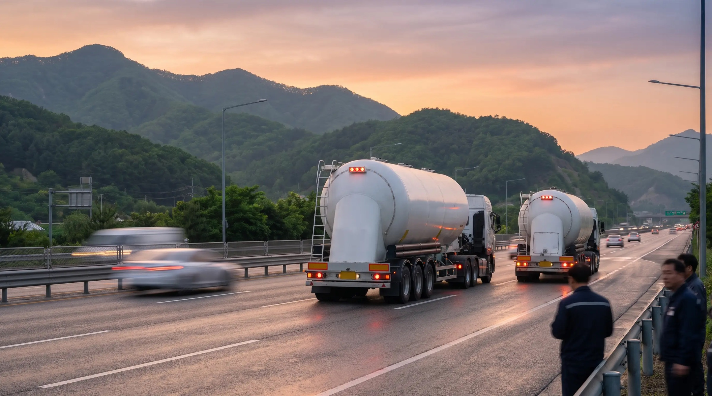
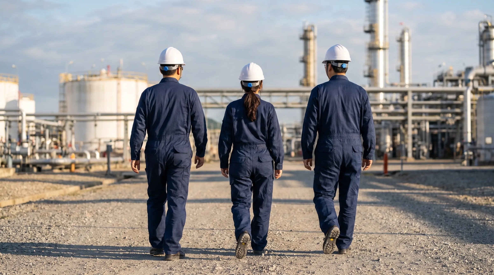

SCROLL- 2007설립연도
- 5종생산·공급 제품
- 3개사업장(울산·이천·용인)
- 2045Net Zero 목표 연도
공기분리장치(ASU)
공기를 압축·냉각해 액화한 뒤, 성분마다 다른 끓는점을 이용해 산소·질소·아르곤을 분리합니다.
- 압축·예냉
- 대기 중 공기를 주 공기압축기로 압축하고 예냉탑과 칠러로 온도를 낮춥니다.
- 정제
- MS 흡착기가 공기 속 수분과 이산화탄소를 제거합니다.
- 콜드박스
- 열교환기와 정류탑이 들어 있는 초저온 설비에서 공기를 성분별로 분리합니다.
- 저장·출하
- 액화가스를 저장탱크에 보관하고 파이프라인과 탱크로리로 출하합니다.

제품
공기분리장치에서 생산한 산소·질소·아르곤과 수소·액화탄산을 공급합니다.


-

01파이프라인
생산기지에서 고객 사업장까지 전용 배관으로 기체를 공급합니다. 석유화학·정유·철강 산업단지와 반도체 클러스터의 대규모 연속 수요에 적용합니다.
- 적합 수요
- 대규모·연속
- 주요 가스
- O₂, N₂, H₂, Ar
- 계약 형태
- 장기 공급계약
-

02On-site
고객 사업장 안에 생산설비를 설치해 현장에서 가스를 생산합니다. 설비는 당사가 투자·운영하고, 고객은 사용한 가스만 구매합니다.
- 적합 수요
- 중대규모·연속
- 주요 가스
- N₂ 중심(O₂, Ar 가능)
- 계약 형태
- 장기 공급계약
-
 03
03Bulk
액화가스를 탱크로리로 운송해 고객 저장탱크에 충전합니다. 탱크 잔량을 원격으로 확인해 배송 시점을 관리합니다.
- 적합 수요
- 중소규모·변동
- 주요 가스
- 액화 O₂·N₂·Ar, 액화탄산
- 계약 형태
- 정기·수시 배송
적용산업
반도체·2차전지·디스플레이부터 정유·화학·철강·금속가공·유리까지 여러 산업 공정에 가스를 공급합니다.

01반도체
챔버·배관 퍼지와 스퍼터링·에칭, 웨이퍼 세정 공정에 초고순도 가스를 공급합니다.
N₂ArH₂CO₂ 02
022차전지
전극 건조와 드라이룸, 전해액 주입 공정에 질소를 공급합니다.
N₂Ar 03
03LCD·OLED
증착·에칭 챔버 퍼지와 스퍼터링 공정에 고순도 가스를 공급합니다.
N₂ArH₂
04정유 및 가스
탈황·수소처리 공정과 탱크·배관 퍼지에 수소와 질소를 공급합니다.
H₂N₂O₂
05화학
산화·수소화 반응의 원료 가스와 설비 퍼지용 질소를 공급합니다.
O₂N₂H₂
06철강
전로·고로 산소 취입과 2차 정련 공정에 산소와 아르곤을 공급합니다.
O₂ArN₂ 07
07금속가공
용접 보호가스와 레이저·플라즈마 절단, 열처리용 가스를 공급합니다.
ArO₂N₂H₂CO₂ 08
08유리
산소부화 연소와 플로트유리 공정에 산소·질소·수소를 공급합니다.
O₂N₂H₂

액화가스는 초저온 탱크로리로
고객 사업장의 저장탱크까지 운송합니다.
지속가능경영
환경·사회·거버넌스 분야의 경영 방침과 인증을 바탕으로 사업장을 운영합니다.
환경
1.5℃ 기후변화 시나리오에 기반한 2045년 Net Zero 목표에 따라 온실가스 배출을 관리하고 있습니다.
자세히 보기사회
ISO 45001 안전보건경영시스템과 공정안전관리(PSM) P등급을 바탕으로 사업장을 운영하고 있습니다.
자세히 보기거버넌스
상법·정관·이사회 규정에 따라 이사회를 운영하며, 2022년 공정거래 자율준수 프로그램(CP)을 도입했습니다.
자세히 보기- ISO 14001
- ISO 50001
- ISO 45001
- ISO 37001
- PSM P등급
- 가족친화인증
- 환경성적표지(LAr·LO₂)
